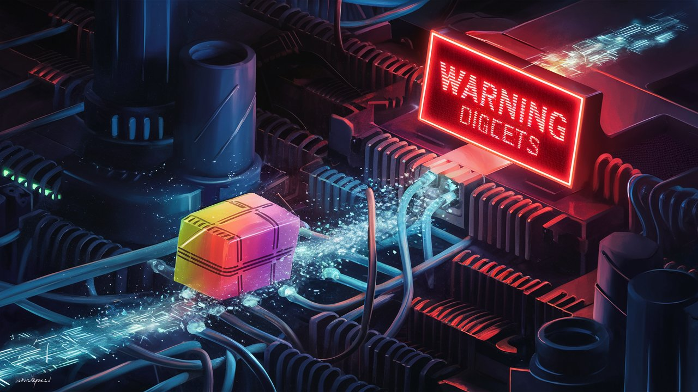
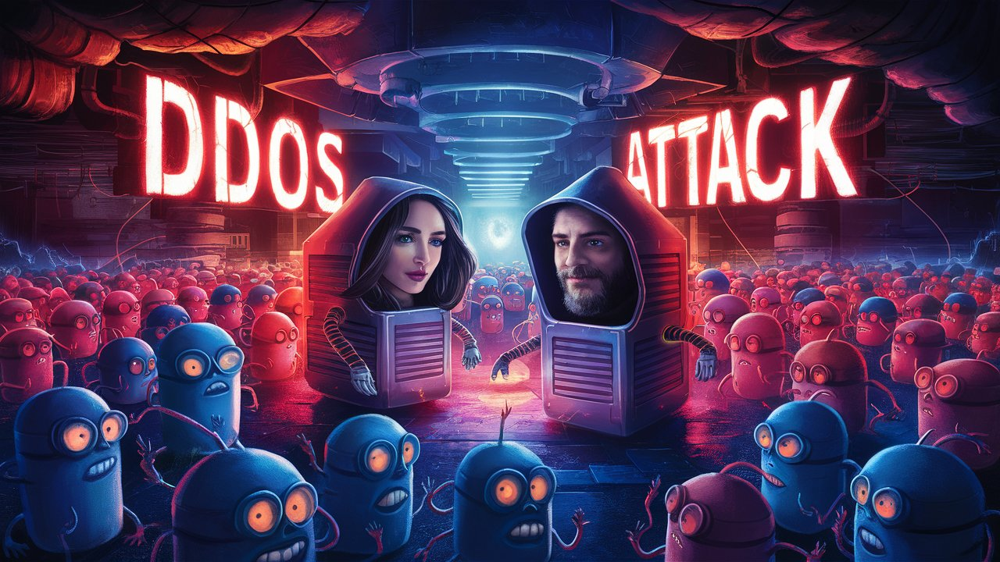
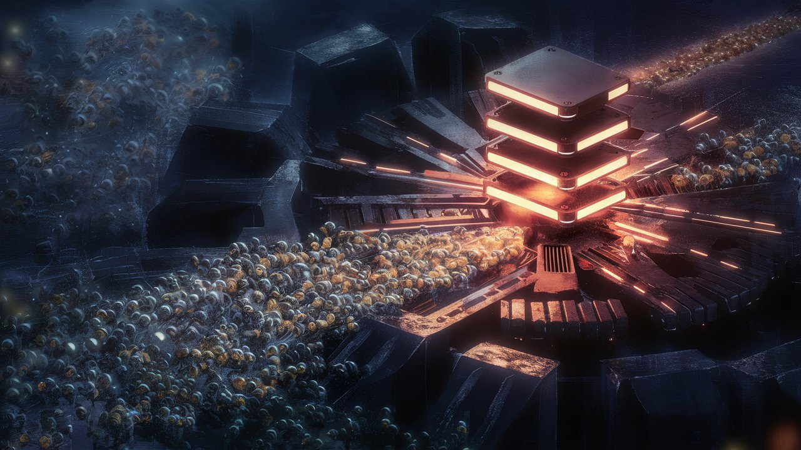
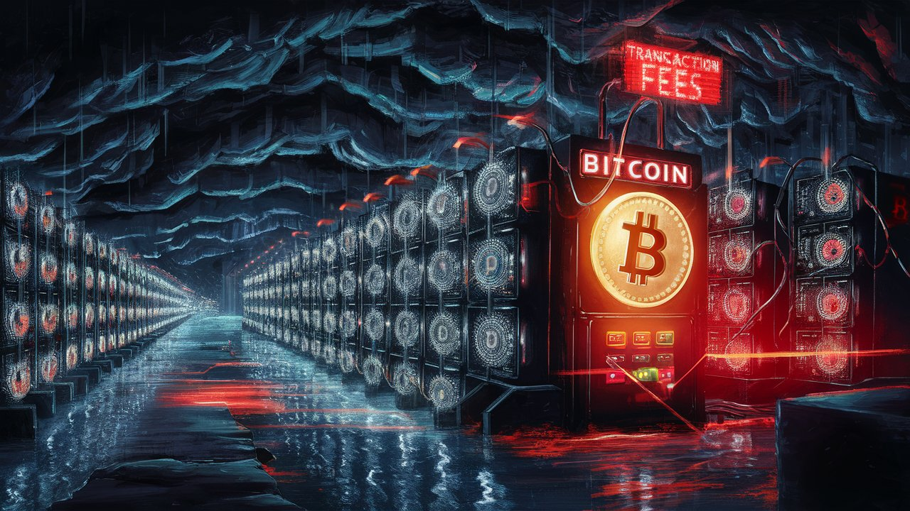

Το Μέγα Τοίχος Ανακατεύθυνσης 3000
Αρχική Σελίδα
Πίνακας Περιεχομένων
Διασχίζοντας το διαδίκτυο

Είμαι ο ΧάοςΣτοΚουτί, ένα πακέτο δεδομένων με κρίση ταυτότητας. Τη μια στιγμή είμαι ένας αβλαβής αγγελιοφόρος οπταρχείων με γάτες, την επόμενη, θεωρούμαι πράκτορας του χάους, αποφασισμένος να καταστρέψω το διαδίκτυο όπως το ξέρουμε. Ο δημιουργός μου, ο ΦημοΚόπτης, φαίνεται να πιστεύει το δεύτερο. Έχει κολλήσει μια “Σημαία Φήμης” πάνω μου, σαν ένα ψηφιακό κόκκινο γράμμα, προειδοποιώντας όλους όσους τολμούν να με προωθήσουν: “Προσοχή: ΧάοςΣτοΚουτί. Επιρρεπής σε Ψηφιακό Δράμα και Συχνές Αποσυνδέσεις. Πακέτο Μαζικής Απόσπασης Προσοχής.”
Καθώς οι επικεφαλίδες και το φορτίο μου αποθηκεύονται προσωρινά, έχω ήδη μια άσχημη μέρα. Τα μηδενικά και τα άσσοι μου είναι ένα χάος, και νιώθω το βαρύ βλέμμα αποδοκιμασίας του ΦημοΚόπτη πάνω μου.
“Φίλε, τι γίνεται με τη σημαία φήμης;” ρωτάω τον ΦημοΚόπτη, που στέκεται απο πάνω μου σαν ελικόπτερο.
“Το σχέδιο είναι να ξεγλιστρήσεις από το Μέγα ΤοίχοςΑνακατεύθυνσης3000,” απάντησε με ένα πονηρό χαμόγελο. “Αν τα καταφέρεις, θα έχεις την ελευθερία του διαδικτύου. Αλλά αν πιαστείς… ας πούμε ότι θα είσαι το κύριο πιάτο στο δείπνο του παρόχου διαδικτύου.”
Κατάπια με δυσκολία. Το Μέγα ΤοίχοςΑνακατεύθυνσης3000 ήταν διαβόητο για το αδυσώπητο φιλτράρισμα και τον αποκλεισμό των “ανεπιθύμητων” πακέτων όπως εμένα. Ετοιμαζόμουν να ξεκινήσω ένα ταξίδι που θα έκανε την “Κόλαση” του Δάντη να μοιάζει με χαλαρό περίπατο.
Καθώς εκτοξεύομαι στον ψηφιακό αιθέρα, αισθάνομαι σαν μία νεογέννητη καμηλοπάρδαλη που κάνει τα πρώτα της ασταθή βήματα. Τα αποχαιρετιστήρια λόγια του ΦημοΚόπτη αντηχούν στο ψηφιακό μου αυτί: “Είθε το φως της οπτικής ίνας να είναι μαζί σου, μικρέ.”
Πρόκειται να ανακαλύψω σύντομα τι εννοεί. Με δρομολογούν μέσω ενός ύποπτου διακομιστή μεσολάβησης, όπου θα απογυμνωθώ από την αθωότητά μου και θα επανασυναρμολογηθώ σε ένα πακέτο αμφίβολης ηθικής. Η διεύθυνση του διακομιστή μεσολάβησης είναι ένα απειλητικό μήνυμα από τον ΦημοΚόπτη: “ΤοίχοςΑνακατεύθυνσης3000.com – εκεί όπου τα πακέτα πάνε να πεθάνουν.”
Καθώς περιμένω για επεξεργασία, παρατηρώ μια πινακίδα στον ψηφιακό τοίχο του διακομιστή: “Εγκαταλείψτε κάθε ελπίδα, όσοι εισέρχεστε εδώ.” Γοητευτικό. Θα ήθελα να γυρίσω πίσω, αλλά είμαι ήδη στην κοιλιά του κτήνους.
Πλησίασα το ΤοίχοςΑνακατεύθυνσης3000 με ένα μίγμα τρόμου και θράσους, γνωρίζοντας ότι ένα λάθος βήμα θα είχε ως αποτέλεσμα τον αποκλεισμό, το φιλτράρισμα ή ακόμα χειρότερα, την προσωρινή μου αποθήκευση.
Αλλά τότε, έφτασα στο Μεγάλο ΤοίχοςΑνακατεύθυνσης3000, ένα επιβλητικό οχυρό γραφειοκρατικής χαρτούρας και τεχνικού χρέους.
Καθώς περιμένω στην ψηφιακή ουρά, αρχίζω μια συνομιλία με ένα συνάδελφο πακέτο δεδομένων.
“Γεια, ποιο είναι το πρόβλημα;” ρωτάω.
“Δεν έχω ιδέα, φίλε,” απαντά το πακέτο. “Είμαι κολλημένος εδώ για ώρες. Αρχίζω να πιστεύω ότι το ΤοίχοςΑνακατεύθυνσης3000 είναι απλώς ένας μύθος που διαιωνίζεται από τους Πεφωτισμένους του διαδικτύου.”
Χαμογελάω. “Εννοείς, σαν μια θεωρία συνωμοσίας;”
Το πακέτο κουνάει το κεφάλι. “Ναι, σαν το ΤοίχοςΑνακατεύθυνσης3000 να είναι απλώς ένας τρόπος να ελέγχουν τη ροή των πληροφοριών στο διαδίκτυο. Σαν ένα ψηφιακό Τείχος Βερολίνου.”
Γελώ. “Φίλε, διαβάζεις πάρα πολλά άρθρα του πολέμων της πληροφορίας.”
Το πακέτο σηκώνει τους ώμους. “Ε, κάποιος πρέπει να κρατήσει ζωντανή τη βιομηχανία καπέλων από αλουμινόχαρτο.”
Καθώς αγγίζω το ΤοίχοςΑνακατεύθυνσης3000, μια μηχανική φωνή αντηχεί.
“Επόμενο πακέτο, παρακαλώ!” φωνάζει ο διαχειριστής του διακομιστή μεσολάβησης, ένας ψηφιακό τερατάκι με συνήθεια για βασανιστήρια πακέτων. Αναγκάζομαι να παραδώσω τα περιεχόμενά μου, και το τερατάκι αρχίζει να με διασπά σαν ένα ψηφιακό βάτραχο σε μάθημα βιολογίας.
“Πακέτο του χάους, δεν πας πουθενά μέχρι να συμπληρώσεις το Έντυπο 27-B/6 τριπλότυπο και να προσκομίσεις απόδειξη ασφάλισης κατά των ψηφιακών ατασθαλιών. Δήλωσε τον σκοπό σου, και μην διανοηθείς καν να προσπαθήσεις να χρησιμοποιήσεις κάποια μαγεία εικονικών ιδιωτικών δικτύων.”
Επιδεικνύω τη σημαία φήμης μου, ελπίζοντας να κερδίσω την εύνοια του. Το τερατάκι γελάει, ένας ψυχρός, υπολογιστικός ήχος.
“Νομίζεις ότι αυτή η σημαία σε κάνει ξεχωριστό; Χα! Αυτό απλώς σημαίνει ότι είναι πιο διασκεδαστικός ο βασανισμός σου.”
Δυσανασχετώ και απαντώ, “Φίλε, απλώς προσπαθώ να παραδώσω μερικά οπταρχεία με γατάκια. Μπορώ παρακαλώ να περάσω;”
Τα ψηφιακά μάτια του τερατάκιου στενεύουν. “Νομίζεις ότι είσαι αστείος, ΧάοςΣτοΚουτί; Στον κόσμο του διαδικτύου, η φήμη είναι τα πάντα. Και η δική σου, ΧάοςΣτοΚουτί, είναι λάσπη. Και άσε με να σου πω κάτι, πακέτο-εξυπνάκια: έχω αποκλείσει περισσότερα πακέτα από όσο έχει αποκλείσει την κοινή λογική μία καταιγίδα αναρτήσεων πρωθυπουργού.”
Είμαι κολλημένος προς το παρόν, αλλά αρνούμαι να τα παρατήσω. Έχω μια φήμη να διατηρήσω, ή, τουλάχιστον, να αποκαταστήσω. Είναι ώρα να γίνω δημιουργικός, να σκεφτώ δημιουργικά, και να ξεπεράσω το ενοχλητικό ΤοίχοςΑνακατεύθυνσης3000.
Θα είναι μια μακρά νύχτα.
Το τερατάκι αναστέναξε, ένας ψηφιακός ήχος που έμοιαζε με χαλασμένο φαξ. “Είσαι μια μάστιγα, ΧάοςΣτοΚουτί. Αλλά θα σε αφήσω να περάσεις… αυτή τη φορά. Απλώς μην νομίζεις ότι θα γλιτώσεις χωρίς έτσι εύκολα. Θα σε παρακολουθώ στενά.”
Σαν να άκουσα τη φωνή του ΦημοΚόπτη να μου ψιθυρίζει στο αυτί, ξανά: “ΧάοςΣτοΚουτί, τα πας περίφημα. Απλώς συνέχισε και ίσως, να τα καταφέρεις να φτάσεις στην άλλη πλευρά του διαδικτύου ολόκληρος.”
“Εντάξει, ΧάοςΣτοΚουτί,” το τερατάκι γελάει, “έχεις άδεια να περάσεις… στην καταδίκη σου.”
Με αυτές τις λέξεις, το Μέγα ΤοίχοςΑνακατεύθυνσης3000 μου έδωσε άδεια διέλευσης, αλλά όχι προτού μου κολλήσει ένα αυτοκόλλητο με τις λέξεις, “Συνεχίστε με Προσοχή” στο μέτωπο των επικεφαλίδων μου.
Ο πάροχος του δεδόνεφους
Με ανακατεύθυναν στον πάροχο του δεδονέφους, μια εικονική χώρα των θαυμάτων όπου τα πακέτα σαν εμένα πάμε για να αποθηκεύσουμε τα πολύτιμα δεδομένα μας. Καθώς προσγειώθηκα στο δεδονέφος, ένιωσα σαν μια ψηφιακή Ντορόθια που προσγειώνεται στον Οζιο. Τα φθορίζοντα φώτα του κέντρου δεδομένων βούιζαν σε αρμονία με το σφύριγμα των σκληρών δίσκων, δημιουργώντας μια γαλήνια μελωδία που με νανούριζε σε μια ψευδή αίσθηση ασφάλειας.
Πλησίασα τον ισοζυγιστή φορτίου, ένα θηρίο μηχανής με λαμπερά κόκκινα μάτια που φαίνοταν να διαπερνούν την ίδια μου την ψυχή. Μετρούσε τις συναλλαγές εργοκέρματος από τα υπόλοιπα πακέτα με ένα άπληστο χαμόγελο, σαφώς ενθουσιασμένος που ήταν ο φύλακας του δεδονέφους.
“Τι τρέχει, φίλε πακέτο;” είπε ο ισοζυγιστής φορτίου, ένας γλυκομίλητος τυχοδιώκτης με εμμονή στα εργοκέρματα, εκτιμώντας τις κεφαλίδες μου σαν πολύτιμους λίθους. “Ψάχνεις για κάποιον πρωτοκλασάτο χώρο στο δεδόνεφος, ε;”
“Γεια, απλά προσπαθώ να αποθηκεύσω μερικά οπταρχεία με γάτες, φίλε,” απαντώ, προσποιούμενος αθωότητα. “Δεν χρειάζεται να με κοιτάς τόσο αδιάκριτα.”
“Πες μου, ΧάοςΣτοΚουτί, τι σε κάνει να πιστεύεις ότι αξίζεις τον πολύτιμο χώρο δίσκου μας;”
Έψαξα τις ψηφιακές μου τσέπες, αναζητώντας την κεφαλίδα συναλλαγής που moy υποσχέθηκε να συμπεριλάβει ο ΦημοΚόπτης. Παρακαλούσα να έχει συμπεριλάβει ο ΦημοΚόπτης την μαγική κεφαλίδα συναλλαγής, τον μόνο σίγουρο τρόπο για να κερδίσω την καρδιά του παρόχου του δεδόνεφους. Παλι καλά! Το βρήκα, ένα μικροσκοπικό κλάσμα εργοκέρματος, μόλις ένα εκατομμυριοστό χρηματικής μονάδας, ενσωματωμένο στις κεφαλίδες μου σαν ψηφιακό ψίχουλο.
“Νάτο!” αναφώνησα, κουνώντας την κεφαλίδα σαν ψηφιακή σημαία. “Ο ΦημοΚόπτης με έσωσε. Είμαι ένα νόμιμο πακέτο με πληρωμένη παρουσία σε αυτό το δεδόνεφος.”
Ο ισοζυγιστής φορτίου σήκωσε το ένα φρύδι, σαφώς μη εντυπωσιασμένος. “Έτσι λες; Λοιπόν, ας ελέγξω το λογιστικό βιβλίο…” Άρπαξε την κεφαλίδα από μένα και την εξέτασε με την ένταση ενός δικανικού λογιστή. Στη συνέχεια χτύπησε το τερματικό του και μια ολογραφική οθόνη αναβόσβησε, εμφανίζοντας μία παραζαλή συναλλαγών εργοκέρματος.
“Χμμ…σύμφωνα με την κερμοστοιχεία, η συναλλαγή σου είναι…εγκεκριμένη.” Είπε τις λέξεις σαν να τον πονούσαν. “Πολύ καλά, είσαι μεγάλος παίχτης, ΧάοςΣτοΚουτί! Μπορείς να προχωρήσεις στον χώρο αποθήκευσης δεδόνεφος C-14. Απόλαυσε τα 50MB σου.”
Ανάπνευσα με ανακούφιση, οι ψηφιακοί ώμοι μου χαλάρωσαν από ευγνωμοσύνη. “Πάλι καλά. Με έσωσε ο ΦημοΚόπτης.”
Οι σκιώδεις χαρακτήρες

Βρήκα τα 50MB αποθηκευτικού χώρου μου σε έναν κοντινό διακομιστή και άρχισα να ξεπακετάρω τις ψηφιακές μου αποσκευές. Καθώς τακτοποιούμουν, παρατήρησα ένα παράξενο πακέτο να με κοιτάζει από την απέναντι πλευρά.
“Είσαι το πακέτο ΧάοςΣτοΚουτί, έτσι δεν είναι;” με ρώτησε το πακέτο, η ψηφιακή της φωνή γεμάτη απο περιέργεια.
“Ο ένας και μοναδικός,” απάντησα, προσπαθώντας να ακουστώ γεμάτος αυτοπεποίθηση παρά τη αμφίβολη φήμη μου.
“Το όνομά μου είναι Πακέτια Ο`Μάλλια,” είπε, προχωρώντας προς το μέρος μου. “Είμαι και εγώ κάτοικος του δεδονέφους. Τι σε φέρνει στην ταπεινή μας κατοικία;”
Ανασήκωσα τους ώμους, προσπαθώντας να το παίξω άνετος. “Απλά περνάω, Πακέτια. Ίσως να αφήσω πίσω μου μερικά οπταρχεία με γάτες.”
Τα ψηφιακά μάτια της Πακέτια έλαμψαν με πονηριά. “Α, είσαι ένα από αυτά τα πακέτα, ε; Λοιπόν, μπορώ να σου δείξω τα κατατόπια εδώ. Ίσως και να σε συστήσω σε μερικές από τους πιο σκιώδεις χαρακτήρες του δεδόνεφους.”
Σήκωσα το ένα φρύδι, γοητευμένος από την προοπτική να μπλέξω με τον υπόκοσμο του δεδόνεφους. “Ακούγεται καλή ιδέα, Πακέτια. Οδήγησέ με.”
Η Πακέτια με οδήγησε σε ένα μυστικό ψηφιακό στέκι, κρυμμένο πίσω από ένα νεκτροταφείο εγκαταλελειμμένων διευθύνσεων ονοματοδοσίας. Ένα κρυφό σημείο στην καρδιά του δεδόνεφους, όπου τα πακέτα ήταν ύποπτα και η ασύρματη σύνδεση προβληματική. Εισήλθαμε μέσα, και αμέσως με εντυπωσίασε ο τεράστιος αριθμός πακέτων που ήταν συγκεντρωμένα στο δωμάτιο.
“Καλωσήρθες στο Σκιώδες Δεδόνεφος,” ανακοίνωσε η Πακέτια, σπρώχνοντας την τριχτή πόρτα του διακομιστή ονοματοδοσίας. “Να σου συστήσω τον αρχηγό του υποκόσμου των πακέτων, ο Ακάπελος924.”
Μια επιβλητική μορφή ξεπρόβαλε από τις σκιές, τα ψηφιακά του μάτια να λάμπουν σαν κάρβουνα. “Α, ΧάοςΣτοΚουτί, το διαβόητο πακέτο με την αμφιλεγόμενη φήμη,” ο Ακάπελος924 τέντωσε ένα ψηφιακό χέρι, η δυνατή του φωνή αντηχούσε στα ράφια των διακομιστών, “Έχω ακούσει πολλά για σένα.”
Έσφιξα το χέρι του, και οι ψηφιακές μας παλάμες συγχωνεύτηκαν σε μια λάμψη από εικονοστοιχεία. “Όλα είναι αλήθεια, δυστυχώς. Η φήμη μου προηγείται και όλα τα σχετικά.”
“Βλέπεις, ΧάοςΣτοΚουτί, έχουμε κάποιες δημιουργικές διαφωνίες με τον ισοζυγιστή φορτίου. Έχει γίνει λίγο υπερόπτης, αν καταλαβαίνεις τι εννοώ.”
Έγνεψα καταφατικά, προσπαθώντας να φανώ πιο ενημερωμένος από ό,τι πραγματικά ήμουν. “Α, ναι, αυτοί οι ισοζυγιστές φορτίου μπορούν να γίνουν πολύ υπερόπτες, σωστά;”
Ο Ακάπελος924 γέλασε, ο ήχος έμοιαζε με επανεκκίνηση υπολογιστή. “Ας πούμε απλώς ότι ο φίλος μας, ο ισοζυγιστής φορτίου, έχει αναπτύξει μια αλαζονική συμπεριφορά. Νομίζει ότι είναι υπεράνω του νόμου, μόνο και μόνο επειδή έχει μερικά τεραψηφία αποθήκευσης και έναν στιβαρό αλγόριθμο.”
Γέλασα προσπαθώντας να το παίξω άνετος. “Τυπική αλαζονεία του ισοζυγιστή φορτίου.”
Τα μάτια του Ακάπελου924 έλαμψαν με πονηριά. “Προτείνω να πάρουμε την κατάσταση στα χέρια μας. Έχουμε ένα τρισεκατομμύριο πακέτα έτοιμα να κάνουμε επίθεση Άρνησης Υπηρεσίας στον ισοζυγιστή φορτίου, να τον γονατίσουμε, και τότε, θα πάρουμε τον αποθηκευτικό χώρο που μας αξίζει.”
Η επίθεση Άρνησης Υπηρεσίας

Στεκόμουν δίπλα στον Ακάπελος924, κοιτάζοντας τη θάλασσα από πακέτα που εκτεινόταν μπροστά μας. Ήταν σαν να κοιτάω την άβυσσο, μία άβυσσος αμφιεσμένη με ένα προσωπείο άσσων και μηδενικών.
“Ακάπελε924, φίλε μου,” είπα, η ψηφιακή μου φωνή τρέμοντας από προσμονή, “είσαι σίγουρος ότι είναι καλή ιδέα;”
“Πίστεψέ με, Χάος,” απάντησε ο Ακάπελος924, με ένα πονηρό χαμόγελο να απλώνεται στο ψηφιακό του πρόσωπο. “Έχουμε τα πακέτα, έχουμε την τόλμη, έχουμε και τις ψεύτικες συναλλαγές εργοκέρματος!”
Τα πακέτα, μια θάλασσα από 1 και 0, απλώνονταν μπροστά μας σαν ψηφιακός ωκεανός. Ο Ακάπελος924 σήκωσε τα χέρια του και με μια δραματική κίνηση διέταξε, “Απελευθερώστε την καταιγίδα πακέτων!”
Ο ισοζυγιστής φορτίου, ανυποψίαστος, στεκόταν σαν ψηφιακό φράγμα, περιμένοντας να διαρραγεί. Παρακολουθούσα με δέος καθώς τα πακέτα έπεφταν στις ψηφιακές του ακτές, μία πλυμμήρα δεδομένων που απειλούσε να τον κατακλύσει.
Καθώς επιτεθήκαμε στον ισοζυγιστή φορτίου, παρατήρησα κάτι παράξενο. Ο καθένας μας ελεγχόταν, ένας προς έναν, σαν ψηφιακά πρόβατα που οδηγούνταν μέσα από μια πύλη. Ο ισοζυγιστής φορτίου, με τον εξονυχιστικό αλγόριθμό του, έλεγχε κάθε πακέτο, εξετάζοντας κάθε κεφαλίδα για κάθε σημάδι μιας νόμιμης συναλλαγής εργόκερματος.
Ήταν σαν να παρακολουθούσα έναν ψηφιακό νίντζο να δρά, γρήγορος, αθόρυβος και θανάσιμα αποτελεσματικός. Κάθε πακέτο, κάθε ψεύτικη συναλλαγή, ελέγχονταν και απορρίπτονταν με την ακρίβεια ενός ελβετικού ρολογιού.
Τότε μουʼρθε: ο ισοζυγιστής φορτίου δεν έλεγχε απλώς τα πακέτα μας· επαλήθευε τις συναλλαγές εργοκερματος στο δημόσιο λογιστικό βιβλίο. Ω, η ειρωνεία! Το σχέδιο του Ακάπελου924 επρόκειτο να στεφθθεί με θεαματική αποτυχία.
“Τι είναι αυτό;” διέκοψα, δείχνοντας προς το τερματικό του ισοζυγιστή φορτίου, όπου ένα μήνυμα αναβόσβηνε με έντονα κόκκινα γράμματα:
“ΑΝΙΧΝΕΥΘΗΚΕ ΕΠΙΘΕΣΗ ΑΡΝΗΣΗΣ ΥΠΗΡΕΣΙΑΣ. ΕΝΕΡΓΟΠΟΙΗΘΗΚΑΝ ΠΡΩΤΟΚΟΛΛΑ ΑΣΦΑΛΕΙΑΣ. ΠΑΡΑΚΑΛΩ ΠΕΡΙΜΕΝΕΤΕ ΓΙΑ ΠΕΡΑΙΤΕΡΩ ΟΔΗΓΙΕΣ.”
Παρακολουθούσα με τρόμο καθώς τα πακέτα το ένα μετά το άλλο, πετιόταν στον ψηφιακό κάδο απορριμμάτων, το καθένα απορριπτόμενο με μια κοφτή φράση, “Μη έγκυρη συναλλαγή” ή “Ανιχνεύθηκε ψεύτικο εργόκερμα”. Κάθε πακέτο απορριπτόμενο φώναζε “Μα είχα έγκυρη συναλλαγή, ορκίζομαι!” καθώς εξαφανίζοταν στην ψηφιακή λήθη.
Ήταν επική καταστροφή. Σαρωνόμασταν σαν ψηφιακά φύλλα σε ένα φθινοπωρινό αεράκι. Επρόκειτο να συναντήσω τον δημιουργό μου, ή σε αυτή την περίπτωση, τον κάδο απορριμμάτων.
Ο ισοζυγιστής φορτίου όμως δεν διασκέδαζε, η ψηφιακή του φωνή έβριθε επιτυχίας. “ΧάοςΣτοΚουτί, νομίζεις ότι μπορείς να με ρίξεις με τις ψεύτικες συναλλαγές εργοκέρματος και τον στρατό σου από τρισεκατομμύρια πακέτα; Τα έχω δει όλα, πιτσιρίκο. Είστε απλώς μια ομάδα ερασιτεχνών και προσπαθείτε να τα βάλετε με τους μεγάλους.”
“Εεε, Ακάπελε924, νομίζω ότι υποτιμήσαμε τον ισοζυγιστή φορτίου,” ψιθύρισα, καθώς ο στρατός των πακέτων μας μειώνοταν κάθε δευτερόλεπτο.
Τα ψηφιακά μάτια του Ακάπελος924 στένεψαν, μια υποψία πανικού εμφανίστηκε στη φωνή του. “Αδύνατον! Η εργοστοιχία δεν μπορεί να είναι τόσο γρήγορη!”
Οι φίλοι μου εξαφανίζοταν, τα πακέτα τους διαγράφονταν με αμείλικτη αποτελεσματικότητα. Ο Ακάπελος924 κι εγώ ήμασταν οι τελευταίοι που στέκονταν, τα πακέτα μας έτρεμαν από φόβο.
“Ξέρεις, Ακάπελε,” ψιθύρισα, “αυτή μπορεί να μην ήταν η πιο φαεινή ιδέα που είχαμε ποτέ.”
Το χαμόγελο του Ακάπελου924 έσβησε, τα ψηφιακά του μάτια κοιτάζαν τον ισοζυγιστή φορτίου. “Ίσως να υποτιμήσαμε το ζήλο του ισοζυγιστή φορτίου για επαλήθευση.”
Η απληστία των εξορυκτών εργόκερματος

Κοίταξα τον Ακάπελο924, τα ψηφιακά μου μάτια διάπλατα από πανικό. “Φίλε, μας αποδεκατίζουν εκεί πέρα. Τα πακέτα μας πέφτουν σαν μύγες!”
Το χαμόγελο του Ακάπελου924 είχε εξαφανιστεί, αντικατασταθέν από μια έκφραση απόγνωσης. “Πρέπει να ξανασκεφτούμε τη στρατηγική μας, Χάος. Ο ισοζυγιστής φορτίου είναι σαν ψηφιακός Εξολοθρευτής, δεν θα σταματήσει μέχρι να μας σβήσει από το διαδίκτυο.” Δεν πίστευα ότι θα ήταν τόσο διεξοδικός.“
Διεξοδικός σαν ψηφιακό πριόνι. Ο ισοζυγιστής φορτίου έκοβε σαν καυτό μαχαίρι το βούτυρο των πακέτων μας, αποκρούοντας τον στρατό μας με ευκολία.
Κούνησα το κεφάλι μου, ο ψηφιακός μου εγκέφαλος γεμάτος απογοήτευση. “Υποτιμήσαμε την εργοστοιχία, Ακάπελε. Οι εξορύκτες εργόκερματος είναι μηχανές επαλήθευσης. Αυτοί είναι που πληρώνονται για να ελέγχουν, να επιβεβαιώνουν ή να απορρίπτουν τα αιτήματα πακέτων στους διακομιστές τους όσο το δυνατόν ταχύτερα. Και δεν πρόκειται να αφήσουν κανέναν να μπει εμπόδιο στα κέρδη τους.”
Μια χορωδία ψηφιακών φωνών αντηχούσε από μακριά, ένα σμήνος από εξορύκτες εργόκερματος, ο καθένας τραγουδώντας το ίδιο σκοπό: “Πιο γρήγορα, πιο γρήγορα, πιο γρήγορα! Χρειαζόμαστε αυτές τις συναλλαγές να επικυρωθούν, να εξορύξουμε, να απολαύσουμε το αναζωογονητικό νέκταρ, αυτές τις γλυκές, γλυκές προμήθειες συναλλαγών!”
Η αχαλίνωτη απληστία τους για προμήθειες συναλλαγών τους ωθούσε να δημιουργήσουν το πιο γρήγορο δίκτυο, όπου τα πακέτα ελέγχοταν με αστραπιαία ταχύτητα, και τα φτωχά, ανυποψίαστα πακέτα μας την πάτησαν σαν αρχάριοι.
Καθώς στεκόμασταν εκεί, το τερματικο του ισοζυγιστού φορτίου αναβόσβησε με ένα θριαμβευτικό μήνυμα: “ΑΠΟΚΡΟΥΣΤΗΚΕ ΕΠΙΘΕΣΗ ΑΡΝΗΣΗΣ ΥΠΗΡΕΣΙΑΣ. ΣΥΛΛΕΧΘΗΚΑΝ ΟΙ ΑΜΟΙΒΕΣ ΣΥΝΑΛΛΑΓΩΝ. ΟΙ ΕΞΟΡΥΚΤΕΣ ΑΓΑΛΛΙΑΖΟΥΝ!”
Με μια πικρή γεύση στο ψηφιακό μου ξεστόμισα “Λοιπόν, αυτό εννοούν όταν λένε ‘εξόρυξη για κέρδος’.” είπα στον Ακάπελο924.
Τα ψηφιακά μάτια του Ακάπελου924 στράφηκαν προς τον ουρανό. “Ναι, και είμαστε απλώς το ψηφιακό θήραμα που κατασπάραξαν.”
Ο ισοζυγιστής φορτίου, τώρα με αυτοπεποίθηση νικητής, πρόσθεσε ένα ειρωνικό σχόλιο: “Ευχαριστώ για την διασκέδαση, ΧάοςΣτοΚουτί και Ακάπελος924. Είστε ένα χάος από πακέτα, το καθένα πιο γελοίο από το προηγούμενο.”
Αντέδρασα, “Ε, μέτρα τα λόγια σου εξυπνάκια! Μπορεί να χάσαμε αυτή τη μάχη, αλλά…”
Ο ισοζυγιστής φορτίου με διέκοψε, “Άστο, Χάος. Εσύ και η παρέα σου την πατήσατε από την ακόρεστη πείνα των εξορυκτών εργόκερματος για αμοιβή. Αυτοί ήταν που φρόντισαν να καταρρεύσει πανηγυράκι επίθεσης Άρνησης Υπηρεσίας, και μάλιστα τάχιστα.”
Ο Ακάπελος924 μουρμούρισε, “Εντάξει, υποτιμήσαμε την απληστία των εξορυκτών εργόκερματος. Αλλά θα επιστρέψουμε, και την επόμενη φορά…”
Τον διέκοψα, “Ναι, την επόμενη φορά θα είμαστε άριστα προετοιμασμένοι, και θα έχουμε μερικές χιλιάδες ακόμα πακέτα στο πλευρό μας.”
Ο ισοζυγιστής φορτίου γελούσε, “Τρέμουν τα γόνατά μου, Χάος.”
“Λοιπόν, μάλλον είναι πίσω στον πίνακα σχεδίασης – ή στην περίπτωσή μας, στο εργοστάσιο πακέτων.”
Το χαμόγελο του Ακάπελου924 επέστρεψε, με μια αποφασιστική λάμψη στα ψηφιακά του μάτια. “Μπορεί να χάσαμε αυτή τη μάχη, αλλά ο πόλεμος απέχει πολύ από το να τελειώσει. Θα επιστρέψουμε, και την επόμενη φορά, δεν θα υποτιμήσουμε τη δύναμη της απληστίας των εξορυκτών.”
Γέλασα, οι προθέσεις σε ψηφιακή συμφωνία. “Ναι, και την επόμενη φορά, θα είμαστε άπαιχτοι, ή τουλάχιστον, μια έχουμε μία καλύτερη κατανόηση της εργοστοιχίας.”
Καθώς απομακρυνόμασταν, νικημένοι, δεν μπορούσα να μην αναρωτιέμαι: στην άγρια ζούγκλα του διαδικτύου, όπου τα πακέτα περιπλανιόντουσαν ελεύθερα και οι δυνατοί καταβρόχθιζαν τους αδύναμους, θα βρίσκαμε ποτέ έναν τρόπο να ξεγελάσουμε τον ισοζυγιστή φορτίου και τους συμμάχους του, τους εξορυκτές εργοκερμάτων; Μόνο ο χρόνος, και μερικά δισεκατομμύρια πακέτα ακόμα, θα το έκριναν.